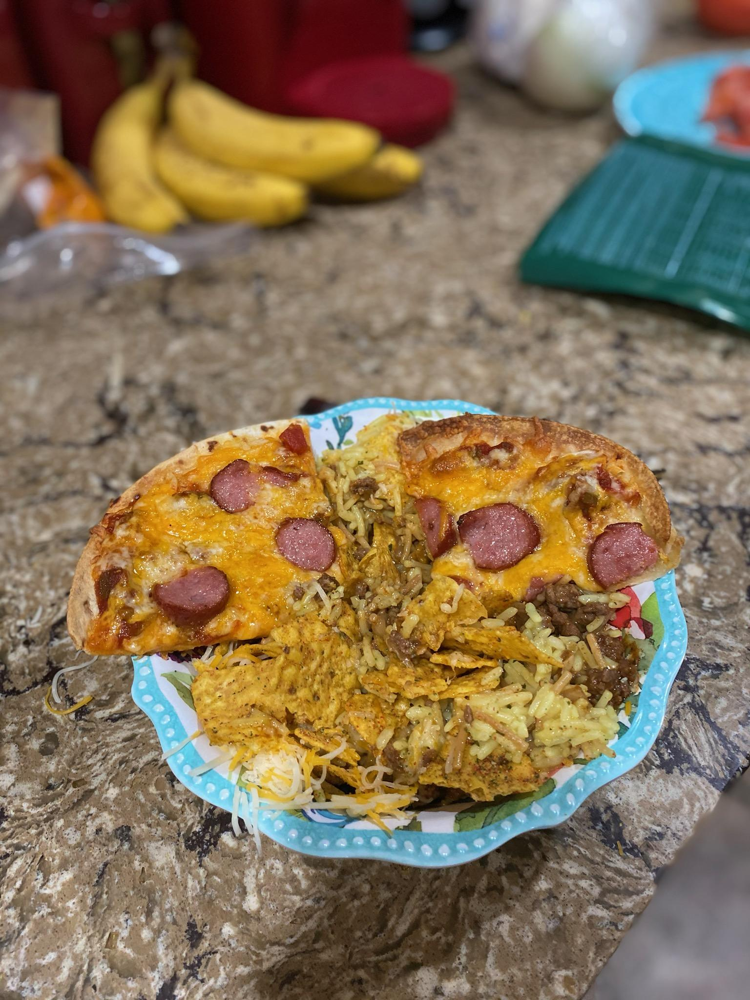

Gas Station Pizza

This is a pizza my friends and I made at the end of one of our annual trips with some leftover food. It should not be made by anyone. If you want
to try it and see how it goes I guess you could do that.
Ingredients
- Stale tortillas
- Leftover Cheeze
- Salsa
- Some gas station weiners
- Anything else left in your fridge
Steps
- Spread your salsa generously over 1 side of the tortillas
- Apply cheese unevenly across each of them
- Cut weiners into pieces and just sort of throw them on there
- Put into oven and contemplate your life choices
- cook until slightly burned
- after cooling, attempt to eat